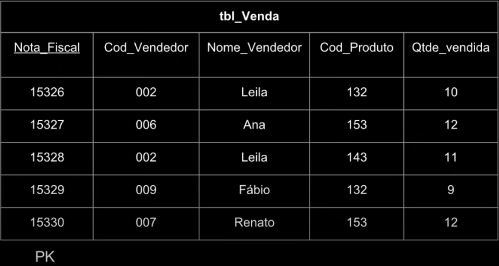
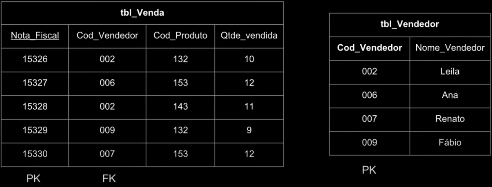
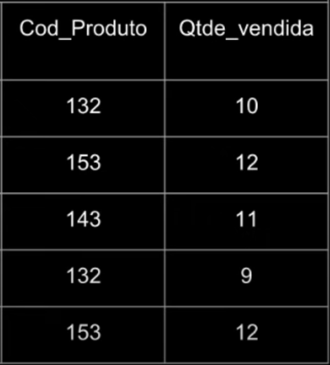
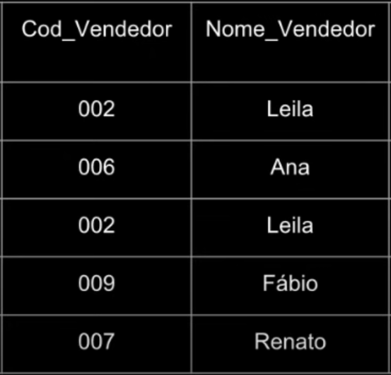

Normalização de Tabela: NF3
A NF3 (terceira forma normal) é a ultima das três principais formas normais (NF1, NF2 e NF3), ao aplicar as três primeiras formas normais
o banco de dados ja pode ser considerado normalizado (as demais formas existem para refinar ainda mais os bancos mais complexos).
O foco principal da NF3 é eliminar dependências transitivas. Dependência transitiva em uma tabela é uma dependência funcional entre dois ou mais atributos não-chave.
Para que seja aplicado a terceira forma normal (NF3) em uma tabela será necessário que: A tabela ja atenda aos critérios da segunda forma normal, não possuindo dependências parciais.
Como aplicar a terceira forma normal em uma tabela
Para cada atributo (ou grupo) não-chave que for um determinante na relação será necessário criar uma nova tabela.
Esse mesmo atributo será a Primary Key (PK ou chave primária) dessa nova relação.
Então será necessário mover todos os atributos que são dependentes funcionalmente do atributo retirado para a nova tabela
Por fim vale ressaltar que o atributo retirado (PK da nova tabela) permanece na tabela original, e servirá como uma chave estrangeira para associar as duas tabelas.
Exemplo de uma tabela que não está na NF3

- Nota_fiscal: neste exemplo é a Primary Key (PK)
- Codigo_Vendedor e Nome_Vendedor: são atributos não-chave que remetem a um vendedor.
- Cod_Produto e Qtde_Vendida: também são atributos não-chave, mas que remetem a Nota_fiscal.
Como é perceptível existem uma Dependência transitiva nessa tabela, isso ocorre porque os atributos Codigo_Vendedor e Nome_Vendedor
não estão ligados unico e exclusivamente a chave primária (Nota_fiscal).
Aplicando a terceira forma normal no exemplo

- Os dois atributos não-chave que possuiam alguma dependência funcional, foram realocados em uma nova tabela chamada tbl_Vendedor.
- O atributo principal da dependência transitiva (Codigo_Vendedor) permaneceu na tabela tbl_Venda mas agora como uma Foreign Key (FK).
- Na tabela tbl_Vendedor o atributo principal se tornou a Primary Key da tabela.
Observação importante para encontrar uma dependência transitiva

Neste exemplo mesmo o Cod_Produto sendo igual na primeira e quarta linha, a quantidade vendida não é a mesma, indicando que um não depende diretamente do outro.

Por outro lado nessa dependência transitiva os dois atributos sempre são idênticos em cada linha.
Questões
Conclusão
Agora você possui o conhecimento necessário para normalizar uma tabela simples, mas será necessário mais ATENÇÃO para os seguintes módulos